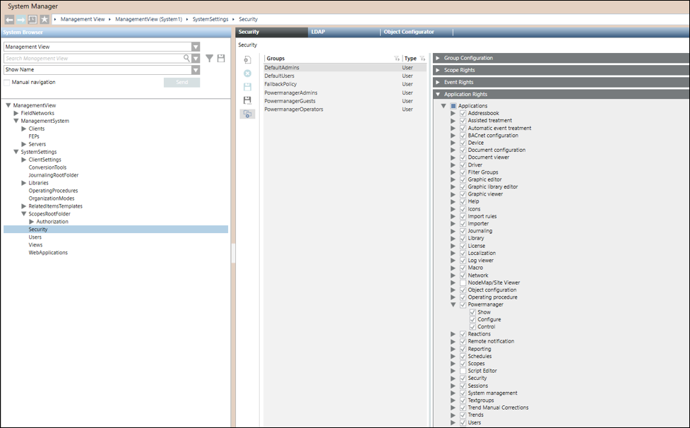

Configure Website, WSI, D3 Visualization, and Advance Reporting Application
In SMC under the Websites node create a website, WSI app, D3 Visualization app, and Advanced Reporting Application.
- Create Web Services application.
- Create the D3 Visualization application.
- Create the Advanced Reporting Application. (See Create an Advanced Reporting Web Application)
- Start
 and Activate
and Activate the project.
the project. - Start the Desigo CC client. The user name for Desigo CC Client is set to defaultadmin and password is DefaultAdmin, reset the password on first logon and launch Desigo CC.
- You have logged into the Desigo CC client.
- Ensure that you have configured a user group, and assigned Scope rights (See Assign Scope to a User Group) and application rights (See Verify Powermanager Application Rights) to the user group.
To verify rights navigate to Security tab, that displays when you select Project > System Settings > Security in the System Browser in the Engineering mode.
